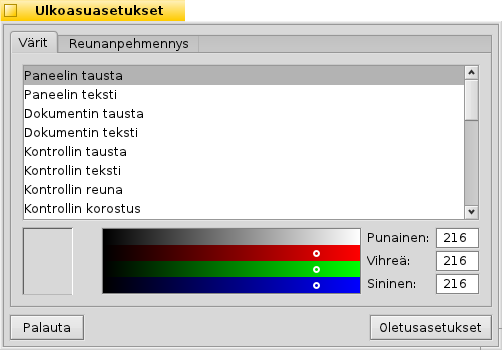
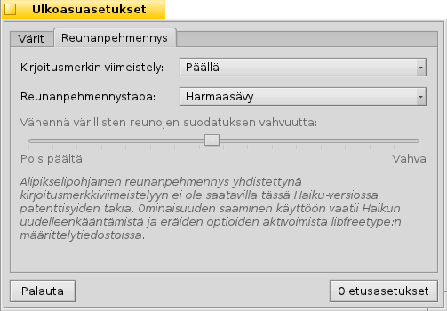
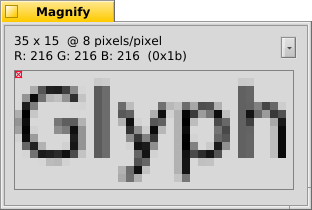
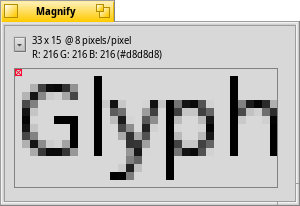
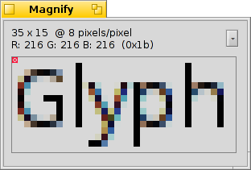

Suomi
Suomi Français
Français Deutsch
Deutsch Italiano
Italiano Русский
Русский Español
Español Svenska
Svenska 日本語
日本語 Українська
Українська 中文 ［中文］
中文 ［中文］ Português
Português Slovenčina
Slovenčina English
English Ulkoasuasetukset
Ulkoasuasetukset
| Työpöytäpalkki | ||
| Sijainti | /boot/system/preferences/Appearance | |
| Asetukset | ~/config/settings/system/app_server/appearance |
Ulkoasuasetukset sallivat sinun vaihtaa joitakin Haikun visuaalisia muotoja.
 Värit
Värit

Ensimmäisessä välilehdessä, , voit vaihtaa käyttöliittymän eri osien värejä. Värikaivo hyväksyy raahaa ja pudota -toiminnon muista ohjelmista, sallien sinun vetää värejä esimerkiksi WonderBrush, Icon-O-Matic tai Tausta-asetukset -paneeleista.
Reunanpehmennys

Toinen välilehti, , tarjoaa erilaisia asetuksia kuinka asioita voidaan renderoida näytöllä.
Kirjoitusmerkin viimeistely
Aktivoitu tasaa kaikki kirjaimet siten, että niiden pystysuorat ja vaakasuorat reunat ovat tarkalleen kahden pikselin välissä. Tuloksena on täydellinen kontrasti, erityisesti kun kyse on mustasta valkoisella pohjalla. Teksti näyttää terävämmältä. Siellä on myös asetus joka on erityisen hyödyllinen matalaresoluutiolaitteissa, kuten miniläppäreissä. Pienet kirjasimet voivat näyttää todella pahoilta, kun viimeistely on päällä, mutta tällä asetuksella etuna on tekstieditorien ja pääteikkunoiden tekstin viimeistely.
Katso mitä eroa viimeistely tekee näissä näyttökaappauksissa:
|  Viimeistely: pois päältä |  Viimeistely: päällä |
Olisi kiinnitettävä huomiota, että kaikki Suurenna-ikkunat tällä sivulla renderoivat tietysti itsensä eri valinnoilla. Joten saat todellisen esityksen vaikutuksista vertaamalla esimerkiksi lihavoitua keltaista välilehtiotsikkoa tai tekstiä "33 x 15 @ 8 pixels/pixel".
Reunanpehmennystapa
Toinen tekniikka parantaa renderointia on Reunanpehmennys, mikä tukee kaikkea vektorigrafiikkaa ja myös tekstiä. Se pehmentää viivoja vaihtamalla tiettyjen pikselien väriä. Tätä varten on kaksi menetelmää:
vaihtaa pikselien intensiteettiä reunalla.
tekee vielä paremman työn, erityisesti (suuriresoluutio) LCD-näytöillä. Pikselin intensiteetin sijasta se vaihtaa sen väriä, mikä siirtää reunaa pikselin murto-osalla, koska nestekidenäytöt tuottavat jokaisen pikselin punaisesta, vihreästä ja sinisestä komponentista.
Taas kaksi eri menetelmää suurennetulla näytönkappauksella:
Harmaasävy, viimeistely: pois päältä | LCD alipikseli, viimeistely: pois päältä |
Alipikseleihin perustuva reunanpehmennys lisää lievän värillisen hohdon objektiin. Kaikki eivät pidä siitä. Haikussa voit sekoittaa kaksi reunanpehmennystapaa ja löytää sinulle oikean asetuksen liukukytkimen avulla.
Jos aktivoit viimeistelyn plus LCD alipikselirenderoinnin vaihtamalla lähdekoodia ja kääntämällä sen uudelleen, niin se näyttää seuraavalta verrattuna viimeistelyyn Harmaasävyllä.
Harmaasävy, viiimeistely: päällä |  LCD alipikseli, viimeistely: päällä |
Paneelin pohjalla on kaksi painiketta:
| nollaa kaikki oletusarvoihin. | ||
| tuo takaisin asetukset, jotka olivat aktiivisia, kun käynnistit Tausta-asetukset. |